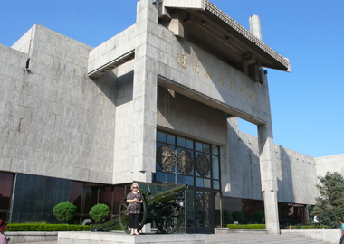

辽沈战役纪念馆成立于1959年1月，其前身是辽宁省地志博物馆筹备处锦州办事处、锦州历史文物陈列馆，设在锦州老城区古塔脚下的大广济寺古建筑内，即现在的锦州市博物馆院内。
辽沈战役纪念馆基本陈列的主题是 “ 决战决胜 ” 。 整体设计思路是突出主题，把握重点，强化亮点，即体现军事题材特点，又具有现代化特质。设计的基调和风格是庄重、精练、舒展、大气。设计的原则是坚持内容编排、形式设计、展示手段上的创新和有机结合，注重博 辽沈战役纪念馆 辽沈战役纪念馆 [2] 物馆展陈语言的运用和总体环境艺术氛围的营造。辽沈战役纪念馆主体建筑面积 8600 平方米，建筑结构共分三层，基本陈列设有序厅和战史馆、支前馆、英烈馆、全景画馆4 个专题馆。 根据建筑结构的特点和每个馆的特性，一层为序厅和战史馆，下一层为支前馆，下二层为英烈馆，最后沿着螺旋式坡道盘旋而上为全景画馆。整个展览面积为4912.92平方米，展线长度768.92米（不含序厅），展品1460余件。
辽沈战役纪念馆基本陈列的主题是 “ 决战决胜” 。设计的基调和风格是庄重、凝练、舒展、大气。基本陈列设有序厅和战史馆、支前馆、英烈馆、全景画馆 4 个专题馆。
全景画馆是一项综合性的巨大工程，建筑艺术，地面塑型制作艺术，高度写实的油画艺术以及配置合理的灯光、音响，才会产生完整的全景画艺术效果。攻克锦州全景画具备了和世界上大型全景画同等规模的巨大篇幅，同时结合着高水平的建筑艺术、绘画艺术、塑型艺术和灯光、音响等现代技术。在总体设计中综合着现代技术和多种艺术的互相协调和互相补充。参加创作的军队和地方的各方面专家、艺术家、技术人员以高度的政治责任感和历史责任感经过3年的通力合作，反复试验，不断总结经验，不断改进提高，终于使攻克锦州全景画馆顺利建成。从而填补了我国博物馆事业和美术事业的一项空白。